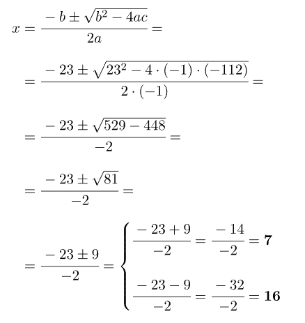
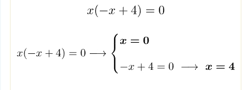
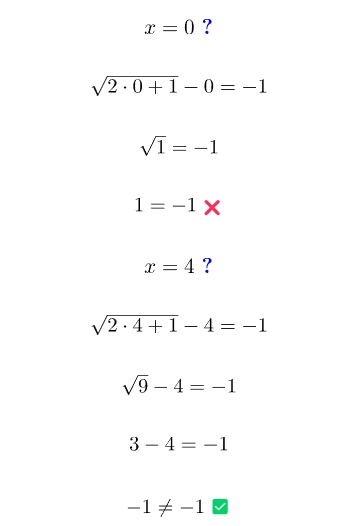
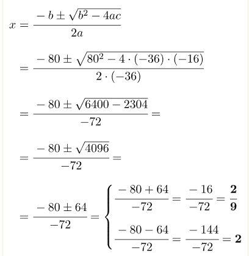
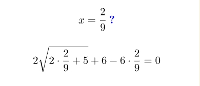

Aquí te explicamos qué son y cómo se resuelven las ecuaciones irracionales, también llamadas ecuaciones con radicales o ecuaciones con raíces. Además, encontrarás varios ejercicios resueltos paso a paso de ecuaciones irracionales para que puedas practica
¿Qué son las ecuaciones irracionales?
Las ecuaciones irracionales, también llamadas ecuaciones con radicales o ecuaciones con raíces, son ecuaciones en las que la incógnita aparece bajo un signo radical, es decir, las ecuaciones irracionales tienen como mínimo una incógnita en el radicando de una raíz.
Cómo resolver ecuaciones irracionales
Para resolver una ecuación irracional se deben hacer los siguientes pasos:
Aislar la expresión radical en un miembro de la ecuación irracional.
Elevar al cuadrado los dos miembros de la ecuación irracional.
Simplificar la raíz de la ecuación irracional desarrollando las potencias.
Si la ecuación aún tiene raíces, volver al paso 1.
Cuando la ecuación ya no tiene ninguna raíz, resolver la ecuación resultante del paso 3.
Comprobar las soluciones sustituyendo cada valor calculado en la ecuación irracional original.
Esta es la teoría que se aplica para calcular cualquier tipo de ecuación irracional. Sin embargo, este método es un poco difícil de entender, así que a continuación vamos a ver exactamente cómo se soluciona una ecuación irracional resolviendo un ejemplo paso a paso.
Ejemplo de ecuación irracional resuelta
vamos a explicar la resolución de un ejemplo paso a paso:
√(9+x) +11 = x
Lo primero que debemos hacer es aislar la raíz en un miembro de la ecuación. En este ejercicio, para lograrlo solamente tenemos que mover el número 11 al miembro derecho:
√(9+x) = x -11
En segundo lugar, debemos elevar los dos miembros de la ecuación al orden de la raíz. Como en este ejercicio tenemos una raíz cuadrada, elevamos al cuadrado ambos miembros de la ecuación:
√(9+x)² = (x -11)²
Y luego simplificamos la raíz cuadrada:
9+x = (x -11)²
De este modo hemos podido quitar la raíz de la ecuación y ahora simplemente tenemos que resolver una ecuación de segundo grado.
Así pues, resolvemos la igualdad notable del lado derecho de la ecuación:
9+x = x² + 11² - 2.x.11
9+x = x² + 121 - 22x
Ponemos todos los términos en el mismo miembro:
9+x - x² - 121 + 22x = 0
Sumamos y restamos los términos con el mismo grado:
-x² + 23x - 112 = 0
Y resolvemos la ecuación de segundo grado aplicando la fórmula general:

Por lo tanto, hemos encontrado dos posibles soluciones, x=7 y x=16. Sin embargo, en las ecuaciones irracionales siempre tenemos que comprobar que realmente sean soluciones. Para ello, sustituimos las soluciones encontradas en la ecuación original, y miramos si se cumple la igualdad:
x = 7?
√9 + 7 + 11= 7
√16 + 11 = 7
4 + 11 = 7
15 ≠ 7 ✗
x = 16?
√9+x16+11 = 16
√25 + 11 = 16
5 + 11 = 16
16 = 16 ✓
Por lo tanto, realmente x=7 no es una solución de la ecuación irracional, porque no se cumple la ecuación al sustituir su valor en la expresión algebraica original. En cambio, al sustituir x=16 en la ecuación original sí que obtenemos una igualdad, por lo que x=16 sí que es solución de la ecuación irracional.
Ejercicios resueltos de ecuaciones irracionales
A continuación, hemos resuelto paso a paso varios ejercicios de ecuaciones irracionales, también llamadas ecuaciones con radicales o con raíces. Las ecuaciones irracionales están resueltas de menor a mayor dificultad, te recomendamos que empieces por las más fáciles. Y recuerda que puedes dejarnos cualquier duda que te surja en la pagina principal.
Ejercicio 1
Resuelve la siguiente ecuación irracional con una raíz:
Primero de todo, despejamos la raíz en un lado de la ecuación:
√2x+1 = -1 + x
Una vez tenemos la raíz aislada, elevamos al cuadrado los dos lados de la ecuación:
(√2x+1)² = (-1 + x)²
Y ahora podemos simplificar la raíz de la ecuación gracias a las propiedades de los radicales y de las potencias:
2x+1 = (-1 + x)²
Resolvemos la igualdad notable de la derecha de la ecuación:
2x+1 = 1² + x² - 2.1.x
2x+1 = 1 + x² - 2x
Trasponemos todos los términos al primer miembro de la ecuación:
2x+1-1-x²+2x= 0
Agrupamos los términos semejantes:
-x²+4x= 0
Y resolvemos la ecuación de segundo grado incompleta que hemos obtenido:

De manera que las dos posibles soluciones de la ecuación irracional son x=0 y x=4. Comprobamos ahora las dos soluciones sustituyendo sus valores en la ecuación original:

El único valor que verifica la igualdad es x=4, en consecuencia, la única solución de la ecuación irracional es x=4.
Ejercicio 2
Primero aislamos la raíz en un lado de la ecuación irracional:
2√2x+5 = 6x - 6
En este problema tenemos una raíz cuadrada, por lo que elevamos al cuadrado los dos lados de la ecuación:
(2√2x+5)² = (6x - 6)²
Eliminamos la raíz utilizando las propiedades de los radicales y de las potencias:
2²(√2x+5)² = (6x - 6)²
4(2x+5) = (6x - 6)²
Resolvemos la igualdad notable de la derecha de la ecuación:
4(2x+5) = (6x)² + 6² -2.6x.6
Operamos en ambos miembros de la ecuación:
8x + 20 = 36x² + 36 - 72x
Trasponemos todos los monomios al lado izquierdo y agrupamos los que tienen el mismo grado:
8x + 20 - 36x² - 36 + 72x = 0
- 36x² + 80x - 16 = 0
Resolvemos la ecuación cuadrática aplicando la fórmula general:

Verificamos las dos soluciones sustituyendo los valores calculados en la ecuación del principio:

Calculamos con la calculadora:
En definitiva, la única solución de la ecuación con radicales es x=2.
Ejercicio 3
En este problema tenemos una ecuación irracional con 2 raíces, por tanto, tendremos que emplear el mismo procedimiento 2 veces.
En primer lugar, aislamos una raíz (la que quieras) en un miembro de la ecaución:
√2x+3 = 2 + √x-2
Una vez tenemos un radical aislado, elevamos a la 2 los dos miembros de la ecuación:
(√2x+3)² = (2 + √x-2)²
Simplificamos la raíz del lado izquierdo:
2x + 3 = (2 + √x - 2)²
Por otro lado, resolvemos la igualdad notable del lado derecho usando la fórmula del cuadrado de una suma:
2x + 3 = 2² +(√x - 2)² + 2.2.√x - 2
2x + 3 = 4 + x - 2 + 4 √x - 2
Ahora aislamos la otra raíz y operamos para facilitar los cálculos:
2x + 3 - 4 - x + 2 = 4√x - 2
x + 1 = 4√x - 2
Una vez tenemos el segundo radical aislado, volvemos a elevar al cuadrado los dos miembros de la ecuación:
(x + 1 )² = (4√x - 2)²
Simplificamos la raíz restante:
(x + 1 )² = 4²(x - 2)
Resolvemos la igualdad notable de la izquierda de la ecuación:
x² + 1² + 2.x.1 = 4² (x - 2)
Y operamos:
x² + 1 + 2x = 16 (x - 2)
x² + 1 + 2x = 16x - 32
x² + 1 + 2x - 16x + 32 = 0
x² - 14x + 33 = 0
Ahora solucionamos la ecuación de segundo grado obtenida aplicando la fórmula general:
Finalmente, debemos comprobar que los dos valores obtenidos sean verdaderamente soluciones de la ecuación irracional. Así que sustituimos cada valor hallado en la expresión original de la ecuación:
En este caso, las dos soluciones obtenidas cumplen con la igualdad, por lo tanto, ambas son soluciones de la ecuación con raíces.
Ejercicio 4
La ecuación irracional de este problema tiene 2 radicales, así que es necesario aplicar el método 2 veces seguidas.
De forma que primero despejamos un radical:
√4x+1 = 6 - √x-5
En segundo lugar, elevamos al cuadrado los dos lados de la ecuación:
(√4x+1)² = (6 - √x-5)²
Quitamos la raíz del lado izquierdo:
4x + 1 = (6 - √x - 5)²
Calculamos la igualdad notable del lado derecho mediante la fórmula del cuadrado de una diferencia:
4x + 1 = 6² +(√x - 5)² - 2.6.√x - 5
4x + 1 = 36 + x - 5 - 12 √x - 5
Y volvemos a aplicar el método para eliminar las raíces de la ecuación. Así que operamos y despejamos la otra raíz:
4x + 1 - 36 - x + 5 = - 12√x - 5
3x - 30 = -12√x - 5
Una vez está aislada, elevamos al cuadrado los dos lados de la ecuación de nuevo:
(3x - 30 )² = (-12√x - 5)²
Simplificamos el radical
(3x - 30)² = (-12)²(√x - 5)²
(3x - 30)² = 144.(x - 5)
Resolvemos la igualdad notable del otro lado de la ecuación:
(3x)² + 30² - 2.3x.30 = 144.(x - 5)
3²x² + 900 - 180x = 144x - 720
9x² + 900 - 180x = 144x - 720
Colocamos todos los elementos en un mismo miembro y agrupamos los que son semajantes:
9x² + 900 - 180x - 144x + 720 = 0
9x² - 324x + 1620 = 0
Solucionamos la ecuación de segundo grado usando la fórmula general:
Y, por último, corroboramos las dos soluciones evaluando la ecuación irracional en los valores conseguidos:
De manera que la única solución de la ecuación con radicales es x=6.